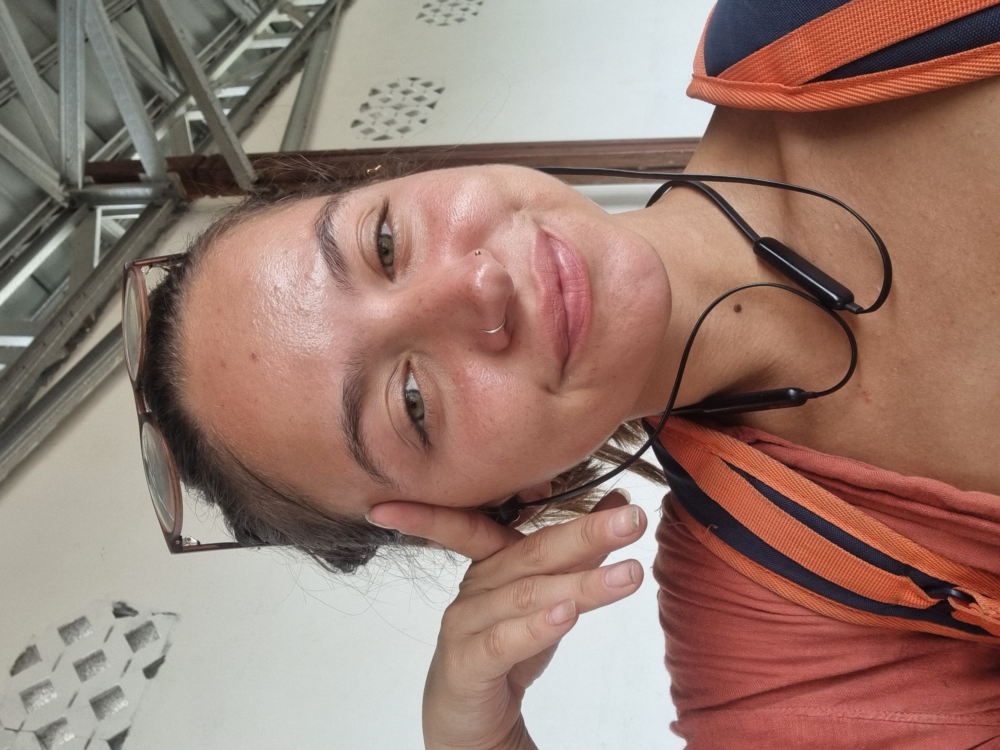

Resume
Georgia Marques-Pike

Summary
I am a hardworking, passionate individual. My main experience to date is in Financial Services but I am keen to develop my web development path
Education
- BA Hons Accounting and Finance - Manchester Metropolitan University
Work Experience
- Power BI Analyst, Shawbrook Bank, Feburary 2023 - Present
Responsibilites:
- Analayse historical date to provide useful insights
- Uncover business insights
- Manage shareholders
- Payments Executive, Shawbrook Bank, January 2021 - Feburary 2023
Responsibilites:
- Process a wide variety of payments from different companies throughout every day, ensuring all service level agreements (SLA’s).
- Undertake additional work that is required, specifically when payment issues arise to guarantee minimal payment delays and maximum client satisfaction.
- Suggest and assist with payment changes, including mandate updates, operating system upgrades and automating internal payment structures.
- Payments Controller, Worldpay, June 2018- January 2021
Responsibilites:
- Process a wide variety of payments from different companies throughout every day, ensuring all service level agreements (SLA’s).
- Undertake additional work that is required, specifically when payment issues arise to guarantee minimal payment delays and maximum client satisfaction.
- Suggest and assist with payment changes, including mandate updates, operating system upgrades and automating internal payment structures.
Skills
- Analytical
- Communication
- Team work
Other
- Full clean driving licence
Hobbies
Contact